Before I give an example of a jumping puzzle that I personally really like let us go over what a jumping puzzle is. A jumping puzzle is a puzzle where you cannot mount if you happen to have the Path of Fire expansion which gives you access to some very good mounts. You also cannot glid which comes from the Heart of Thorns expansion. You only have access to your race or class abilities and your skills at jumping precisely will be put to the test. If you fall, you might be lucky and fall to a checkpoint, or in most cases, you will fall all the way to the bottom and either die and have to run all the way back to the beginning, or you will just have to restart the whole thing over again.
In the Southsun Cove area of Tyria there is a jumping puzzle called the Skipping Stones jumping puzzle. In this jumping puzzle you are trying to get to a chest at the end and you are jumping onto piles of rocks that are raised by geysers for a short amount of time, you are fighting against the clock to reach a checkpoint that is not really a checkpoint, it is more of a rest area. If you fall at any point of this jumping puzzle you will have to restart the whole thing over again.
There are other jumping puzzles in the game besides the one that I show below, some are more complicated than it, while others are easier. I personally really enjoy the challenge of jumping puzzles and hope that you try them out for yourself.
Skipping Stones Jumping Puzzle
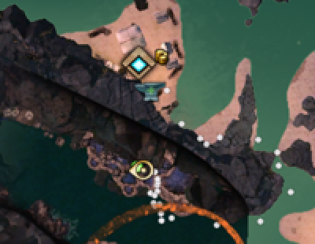
From the Lion Point Waypoint head southwest along the wall until you find an opening into the cavern.
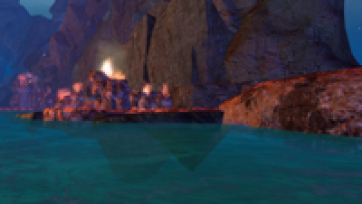
Then head west into the cavern until you see some geysers.
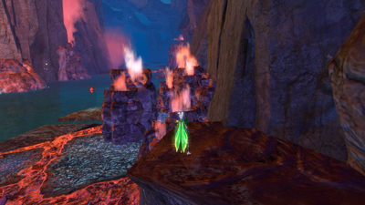
Jump up onto the small outcropping of rocks and wait until the next rotation (if you do not wait you will not have enough time to reach the rest point and the next rotation will have already begun, which will cause you to have to wait for even longer).
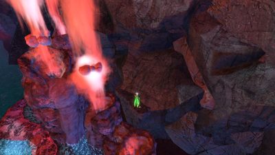
Jump across the floating rocks after they have fully formed (if you jump too soon you will go straight through them) until you reach a ledge where you can rest for a bit before attempting the next part.
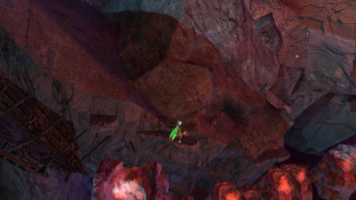
Wait until the next rotation and then jump up the rocks until you reach the next ledge.
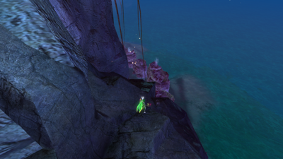
Jump up the cliff and run northwest until you reach some more geysers.
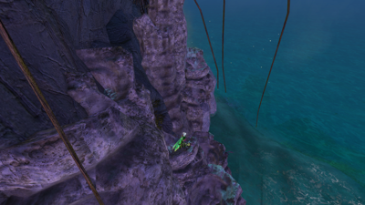
Jump across the geysers until you reach a small area in-between two geysers where you can wait for the next rotation to start.
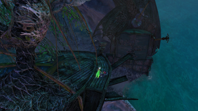
Jump up to the shipwreck and jump across the gap onto the other shipwreck.
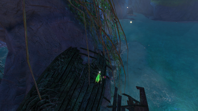
Run across the shipwreck to reach the cliffside and jump onto the ledge.
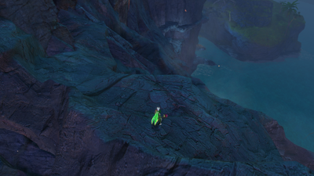
Jump up the side of the mountain until you reach the top.
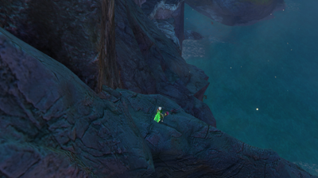
After that head west until you are above a ledge on the cliff.
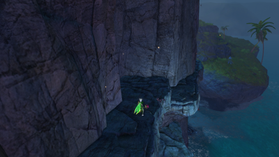
Jump down to the ledge and work your way west alongside the cliff.
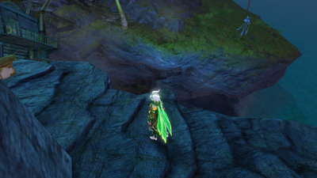
You will come to the chest at the end of the jumping puzzle. You will also get an achievement for completing the jumping puzzle for the first time. Congratulations!